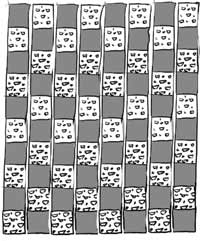
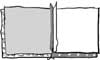
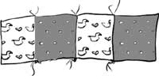

Something You Can Do

Do you know someone that is going to have a baby? Would you like to make it a special gift? Here’s an idea for
A Baby Blanket
You will need:
- Fabric (cotton or flannel)
- A sandpaper or cardboard square (4 in. x 4 in.)
- Scissors, pins, thread
- A sewing machine
- Someone who knows how to sew
- Choose 2 fabrics—one dark and one light, or one patterned and the other plain. Use the sandpaper square as a pattern and cut out 40 squares of each fabric. Be careful to make them the same size.
- Stack up the squares in two piles beside the sewing machine. Put one square of each kind together. The fronts (brighter color) should be facing each other. Now stitch them together along one side, about 1/4 inch from the edge.
- Put two more fabrics together in the same way. Stitch them right after the other squares, like this:
- Keep sewing the two fabrics together until all the squares are done. Open up the squares and stack them.
- Take one set of squares and lay another set facing them, with the colors opposite, like this:
- Sew the edge together. When you open them, it should look like a pattern.
- Keep adding sets of squares until you have ten squares in a row. Make more rows in just the same way. You should have 8 rows.
- Iron all the rows flat. Now lay them out so they make a checkerboard, like the picture at the top shows.
- Pin the first two rows right side together, with the seams matching. Be very careful to keep the squares matched as you sew along the edge. Open them and iron them flat.
- Now pin the next row on carefully (make sure the colors are opposite) and sew it the same way.
- Keep sewing until all the rows are together. Your quilt top is done!



To finish the quilt, have someone help you cut a fabric back and quilt batting for the middle. Sew the layers together and finish the edge. Use a big needle and yarn to make “ties” to hold the quilt together.